The End of an Era: My First Visit to Carowinds
For 12 long years, my favorite roller coaster was Millennium Force at Cedar Point. I'd say it loud and proud, and I will always defend Millie to anyone who scoffs. However, I now have a new favorite coaster which goes by the name of Fury 325.
Overview
The trip to Carowinds was my first complete solo coaster trip, and overall it went really well. I spent the morning of 6/28 traveling, but got to visit the park from 4pm-8pm. On 6/29, I visited from 12pm-8pm. Both days I had FastLane (pre-purchased). My ride totals were 12 on Fury 325, 5 on Copperhead Strike, 4 on Afterburn and Intimidator, 2 on Nighthawk, and 1 on Hurler, Ricochet, Carolina Cyclone, Carolina Goldrusher, Vortex, Woodstock Express, Kiddy Hawk, and Flying Cobras. Ride operations were very slow except on Fury and CHS. Also, employees only checked my FastLane wristband at about half of the coasters. Several times, I witnessed guests who did not have a wristband successfully use the FastLane entrance. Like many other Cedar Fair parks, Carowinds was charming, tidy, and easy to navigate. This park has a good collection of coasters (and a lot of overlap with Kings Island, which I visited less than two weeks prior) but would really benefit from a good woodie.
Coasters
Fury 325 was my #1 bucket list coaster for years, and somehow exceeded my outrageous expectations. Just wow. The only thing Fury lacks is inversions, which I can overlook because it does everything else so well. The massive drop is exhilarating and comparable to the other gigas. This coaster has excellent pacing/speed throughout the first half. The turns are exciting but not jarring like those on Maverick. Perhaps the superior clamshell restraints and more sprawling changes in direction on Fury make those moments more enjoyable for me. The sideways airtime/hangtime sensation at the top of the treble clef element is really neat. Fury's second half is characterized by awesome airtime. Starting with the hive dive, Fury had me out of my seat unapologetically. The 3 airtime hills and final moment going into the break run deliver some of the best airtime for me - not too gentle or abrupt. The whole second half is reminiscent of Orion, and I actually prefer Orion's helix. However, Fury is a much longer and more complete ride. Its layout is far superior to Millennium Force's, although I will always love Millie. I concede that Millennium Force has the better setting along Lake Erie, and possibly better restraints too. After my first ride on Fury 325 I knew I preferred it to Millie, but I rode it 11 more times just to be sure that it deserved to dethrone Millie as my #1 coaster. My favorite seat on Fury 325 was the left seat in the back row, although I didn't get a front row ride. Carowinds was in need of a standout coaster, and B&M came through. This coaster is so fun, smooth, photogenic, and pretty much perfect.
A great candidate for the most underrated steel coaster in the USA, Copperhead Strike is easily my second favorite at the park. This coaster features both amazing hangtime and airtime in one ride. It has a few snappy turns that I didn't care for after the second loop, but my dislike stops there. Even though the launches aren't super intense, I still think they are a lot of fun. I also really like Mack's restraints and Cedar Fair's effort to theme this ride. My favorite inversions on Copperhead Strike are the jojo roll, first loop, and cutback. Each of these inversions has excellent hangtime (right up there with the zero-g stall on Goliath at SFGAm). I personally do not call CHS a "family coaster" because of its extreme negative g's. My favorite seat is back left, although the front is good too. There's not a bad seat on this ride.
I think Intimidator is somewhat of a "standard" B&M hyper. It's smoother than Diamondback and provides good floater airtime on the drop and all hills. Yes, Intimidator is trimmed heavily, but I don't mind because in the back I still came out of my seat in all expected spots. This coaster is more fun in the outer wing seats. I thoroughly enjoyed Intimidator and found myself wanting to reride several times even with Fuy a short walk away. I still prefer Behemoth and Goliath because those coasters have more diverse layouts, cooler surroundings, and better finales.
Another big B&M, Afterburn, left me a little bit disappointed after riding it twice on 6/28. I loved the layout but did not think it was smooth. The roughness was almost as bad as Raptor's. The two rides I got the next day were better, but I still suffered a a fair amount of headbanging. Afterburn reminds me of an extended Batman clone with its intensity, pacing, tight inversions, and whippiness. My favorite parts are going through the trenches after the loop and at the bottom of the batwing. I currently have Afterburn ranked a few spots above Raptor, but way behind Banshee because I prefer Banshee's restraints, length, and larger inversions. All 3 inverts are solid though.
Vekoma's Nighthawk rounds out the "big 5" for me at Carowinds, and is the last coaster at the park to make my Top 50 Coasters. This coaster is not smooth, but not horribly rough either. It has a great layout. Seriously. The parts on my back were the most intense, and the parts on my stomach were fun flying head-first over and around the water. Dispatches were horrendous. The B&M Superman clones get the edge in my rankings for better restraints, loading system, and smoothness. However, I do prefer Nighthawk's layout by a lot with more inversions and flipping from back to stomach. This coaster was so much better than anticipated, and while it was a little bumpy and disorienting, it was also forceful and thrilling. I hope Cedar Fair keeps this gem a while longer.
Surprisingly, Carolina Goldrusher was my next favorite coaster at the park. This Arrow Dynamics mine train is one of the best mine rides I've done. This is a great ride for people of all ages and thrill preferences. My favorite part was the finale - a forceful helix followed by a larger and faster than expected drop into a tunnel. I also enjoyed the central location of Goldrusher and bumping up against several of the park's larger coasters. Had it not been for terrible operations, I would've gone back for a reride. Currently, the only mine ride I have ranked higher is Road Runner Express at Six Flags Fiesta Texas.
Vortex is my least favorite B&M coaster to date, but still isn't a bad ride. Those stand-up coaster restraints are awkward and hard to adjust. The only element that I think is pretty rough on Vortex is the corkscrew. The rest of my ride, especially the drop and loop, was enjoyable. I'd be fine if Cedar Fair decides to keep Vortex as is, converts it to sit-down floorless trains, or removes it. I prefer Vortex to the defunct SkyRider at Canada's Wonderland, but Cobra at La Ronde and the other B&M stand-ups are much better.
One of the most underwhelming and boring woodies of all time, Hurler, has absolutely no airtime. Zero. Even with all those hills that look like they give some airtime. Plus, several stretches of track are very bumpy, and there are no other notable elements or features on Hurler. Count me as one of the people who hope RMC will someday convert this lackluster wooden coaster. Fury deserves a better neighbor!
I enjoyed Carolina Cyclone up to and after the corkscrews. I have it ranked near the bottom of the Arrow loopers I've ridden because of its jolty inversions. This ride is still kind of thrilling and looks nice swooping over the midway at Carowinds. The recycled trains from Kings Island did not feel any different to me.
My last and roughest credit of the trip was a Vekoma boomerang clone called Flying Cobras. The vest restraints are not very comfortable, which is weird because I like B&M's vests a lot. Every inversion on this boomerang was jerky, and the ride ended very abruptly. My head hit the back of the seat pretty hard several times. Sit-down boomerang clones have moved down a few spots in my rankings as a result of my bad experience on Flying Cobras.
From best to worst, the remaining 3 roller coasters I rode at Carowinds were Ricochet, Woodstock Express, and Kiddy Hawk.
Other Rides
In addition to coasters, Carowinds has some flat rides and a couple air conditioned attractions, but no water rides in the dry park. Their Camp Snoopy area looked well-themed. I didn't try any flat rides, but I've heard good things about Mountain Gliders, Electro Spin, and their drop tower.
Food & Merchandise
While at Carowinds, I got food/refreshments from a frozen lemonade stand, Chick-fil-A, the BBQ station in Harmony Hall, Granny's Ice Cream Shop, and Blue Ridge Country Kitchen. All food/drinks tasted great. My favorites were the blue ice cream and mac and cheese from Blue Ridge Junction. Carowinds had some nice multi-coaster t-shirts in Fury's gift shop, but none in my size. I settled for a size too large and am hoping the shirt will shrink in my dryer.
Cost
I took advantage of Carowinds's 2020 Presidents' Day sale and bought two admission + Fast Lane tickets for $131 total. I saved at least $100 with the combos instead of purchasing Fast Lane separately. Cedar Fair was kind to let 2020 ticketholders like me use their tickets this year due to the pandemic. If I had paid full price for FL, skipping the lines would not have been worth it. I only recommend skipping lines at Carowinds for people who cannot visit the park for a full day or want to reride Nighthawk. Food and my t-shirt were marked up 100%. My entire trip (including the flight, 2-night hotel stay, admission, food, transportation to/from the airport, and shirt) cost $780. A huge chunk of the trip was paid for by my family as a Christmas/birthday gift, so thank you to them!
Photos
These photos were taken by me. Please credit this website if used.
 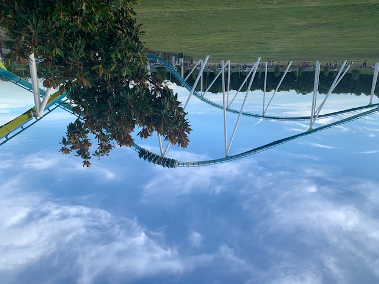
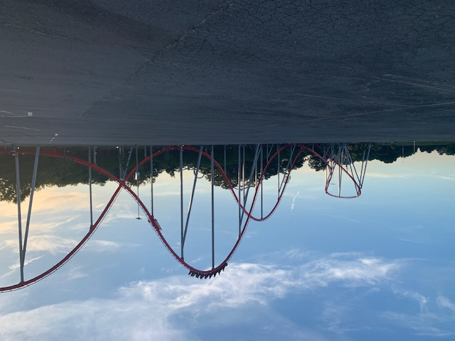
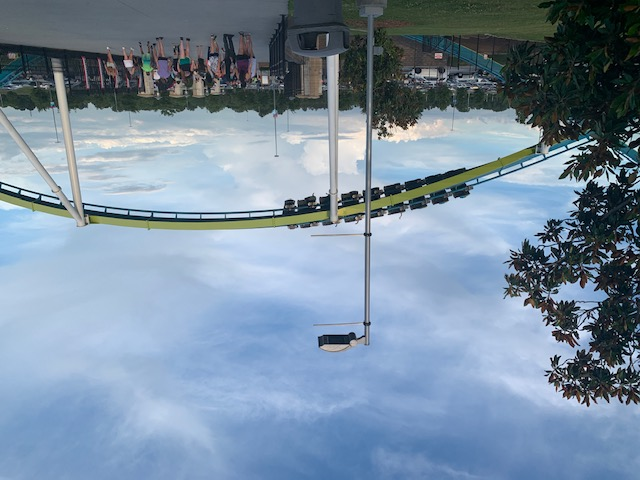
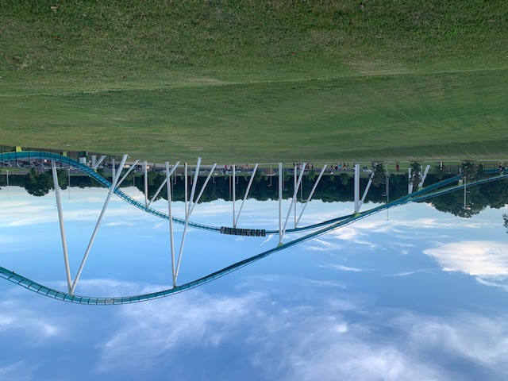
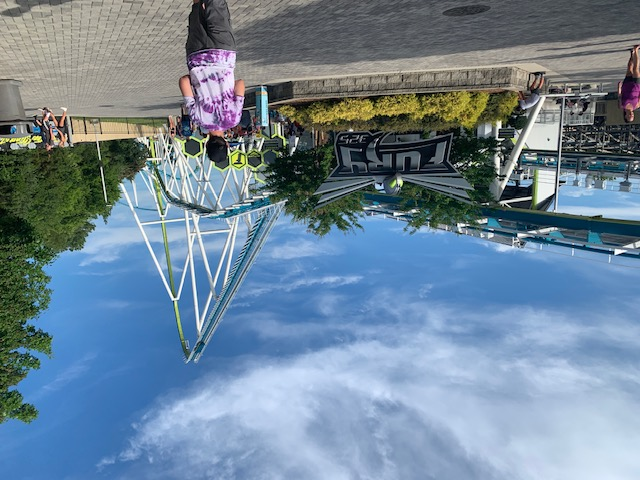
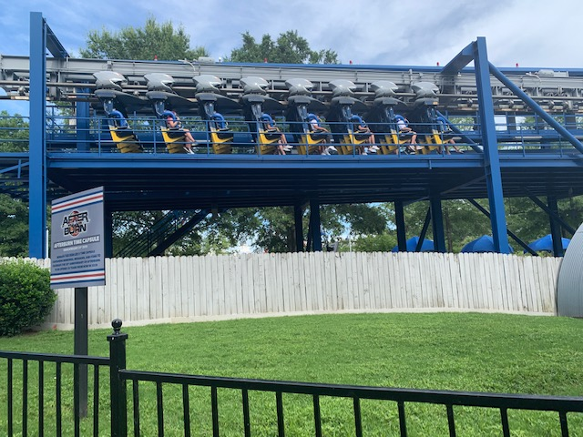
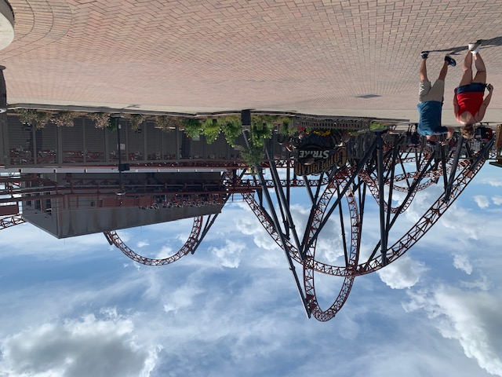
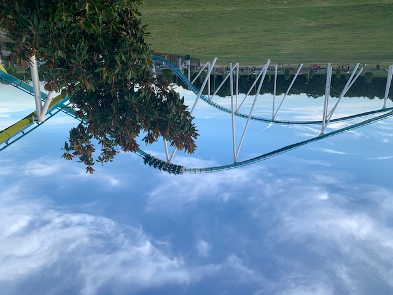
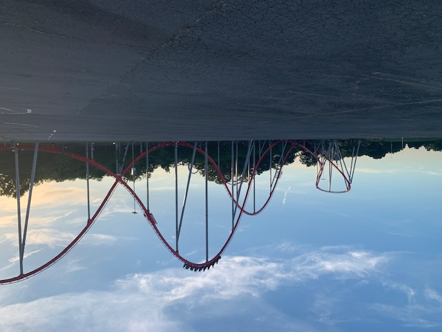
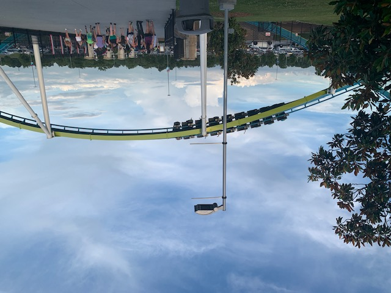
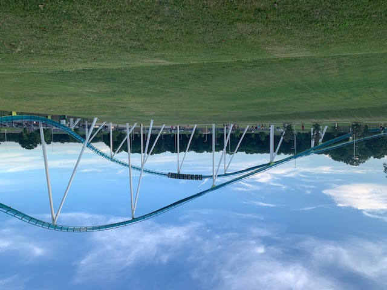
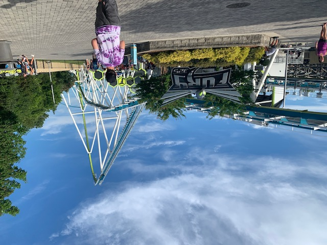
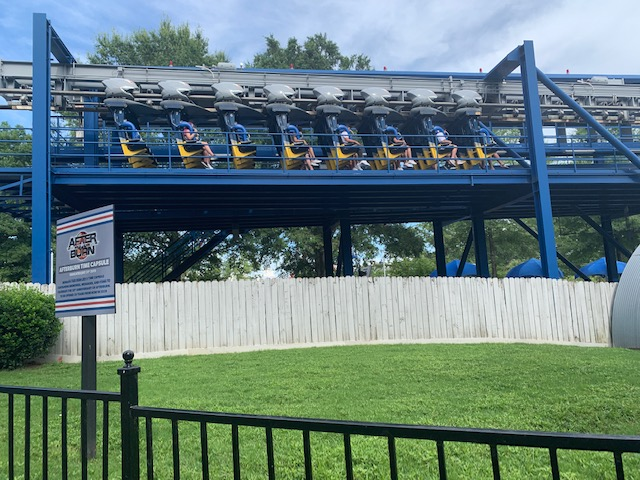
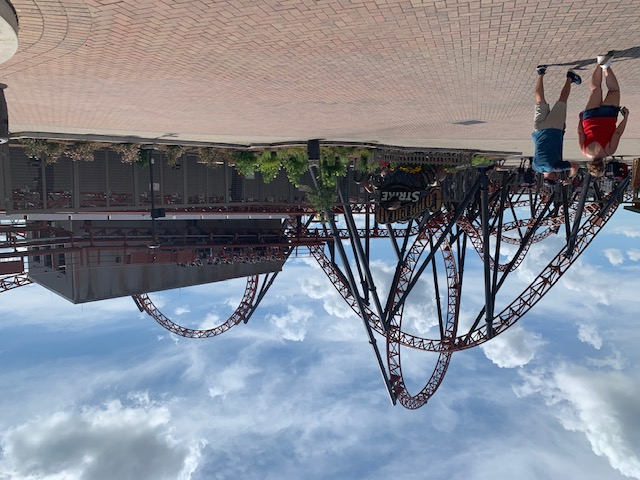